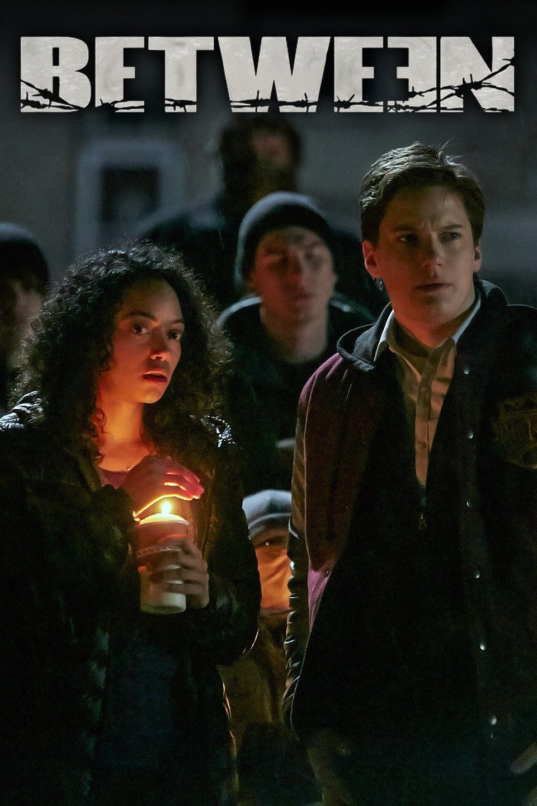
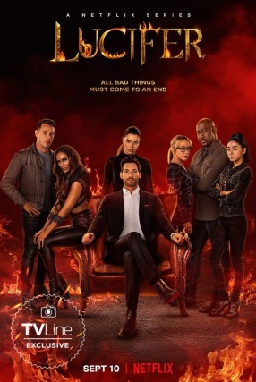
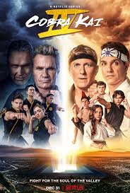

Between
Between is a Canadian science fiction drama television series which debuted on Citytv on May 21, 2015. Created by Michael McGowan, the series stars Jennette McCurdy as Wiley Day, a pregnant teenage daughter of a minister living in the small town of Pretty Lake, which is coping with a mysterious disease that has killed everybody age 22 and older
0

Stranger Things
Stranger Things is an American television series created by the Duffer Brothers for Netflix. Produced by Monkey Massacre Productions and 21 Laps Entertainment, the first season was released on Netflix on July 15, 2016. The second and third seasons followed in October 2017 and July 2019, respectively, and the fourth season was released in two parts in May and July 2022. The fifth and final season is being released in three parts in November and December 2025. The show is a mix of horror, science fiction, mystery, fantasy and coming-of-age drama.
0

Lucifer
Lucifer is an American urban fantasy television series developed by Tom Kapinos that began airing on January 25, 2016, and concluded on September 10, 2021. It revolves around Lucifer Morningstar (Tom Ellis), an alternate version of the DC Comics character of the same name created by Neil Gaiman, Sam Kieth and Mike Dringenberg. In the series, Lucifer, the devil, abandons Hell to run a nightclub in Los Angeles, subsequently experiencing massive life changes when he becomes a consultant to the Los Angeles Police Department. The supporting cast includes Lauren German, Kevin Alejandro, D. B. Woodside, Lesley-Ann Brandt, Rachael Harris and Aimee Garcia.
0

Cobra Kai
Cobra Kai is an American martial arts comedy drama television series created by Josh Heald, Jon Hurwitz, and Hayden Schlossberg, and distributed by Sony Pictures Television. It serves as a sequel to the first three The Karate Kid films created by Robert Mark Kamen.[1] Cobra Kai premiered on May 2, 2018, and concluded on February 13, 2025, after six seasons consisting of 65 episodes. Originally released on YouTube Red / YouTube Premium for its first two seasons, the series later moved to Netflix.
0

Ted Lasso
Ted Lasso (/ˈlæsoʊ/ LASS-oh) is an American sports comedy-drama television series developed by Jason Sudeikis, Bill Lawrence, Brendan Hunt, and Joe Kelly. It is based on a character Sudeikis portrayed in a series of promotional media for NBC Sports' coverage of England's soccer Premier League. The show follows Ted Lasso, an American college football coach who is hired to coach an English soccer team whose owner secretly hopes his inexperience will lead it to failure; instead, Lasso's folksy, optimistic leadership proves unexpectedly successful. The first season of 10 episodes premiered on Apple TV+ on August 14, 2020, with the first three episodes releasing immediately. A second season of 12 episodes followed on July 23, 2021, with the third season released on March 15, 2023. It was announced in March 2025 that the series had been renewed for a fourth season.
0